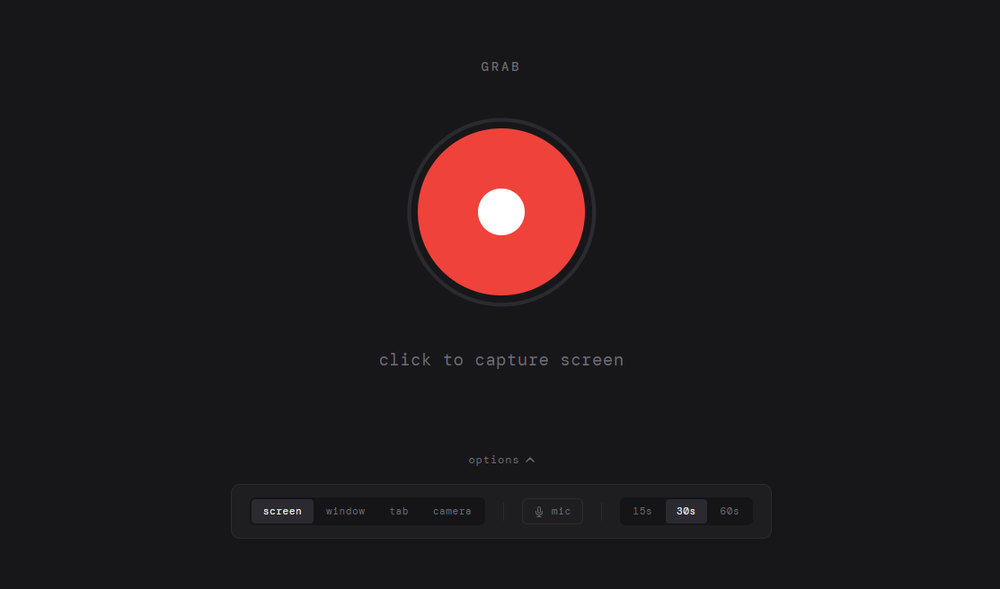

Personal Project · 2026
Grab
A screen recorder that exists because every other option was too much. Single file, no account, opens instantly.
How It Started
I was trying to show my friends a visual effect I'd built into my BPM app — the color of the whole interface shifts as you move your mouse around the page. Easier to show than describe. I needed to record my screen for maybe fifteen seconds and send it to a group chat.
That's when I realized I had no good way to do it. Windows doesn't have a built-in screen recorder worth using. Loom exists but it wants your face on camera and an account and a whole thing. Everything else I could think of was either a sketchy download or way more than I needed.
I'll admit this was a curiosity moment borne from a vibe coding dopamine hit. But now it's a real thing. Yay?
So I asked Claude to build one. Same conversation, right then.
What It Is
Grab is a single HTML file. You open it in Chrome, click the button, pick what to share, record, stop, save. The file lands in your downloads and you drag it into whatever chat you're already in. No account, no upload, no install.
I used it thirty seconds after it existed to send that exact demo to my friends.

The Part That Stuck
I've used it more than anything else I've built. The constraint ended up being the point — it does one thing and opens instantly because there's nothing else to open.
The irony is the first thing I recorded with it was a session of me vibe coding. Which I sent to the people I'd been telling about vibe coding. They got it immediately.